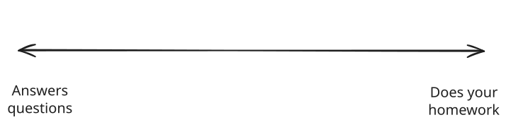
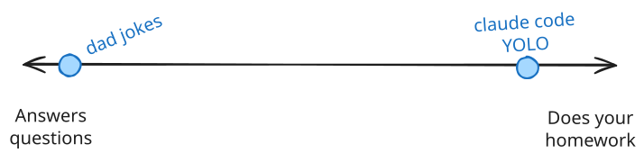
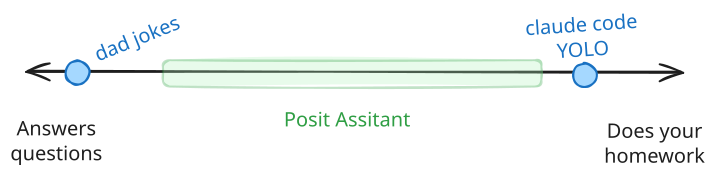
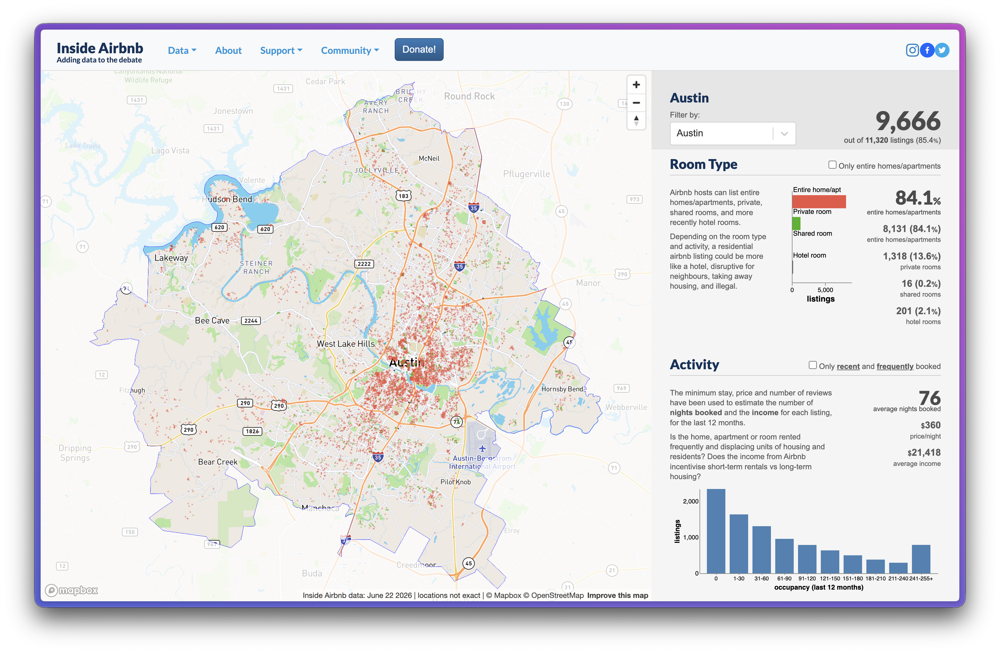
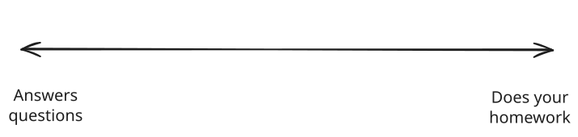
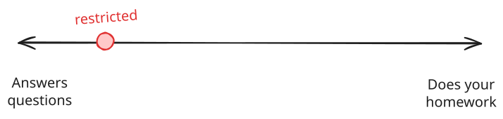
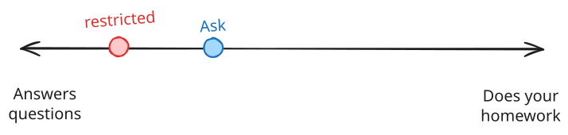
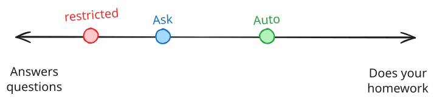
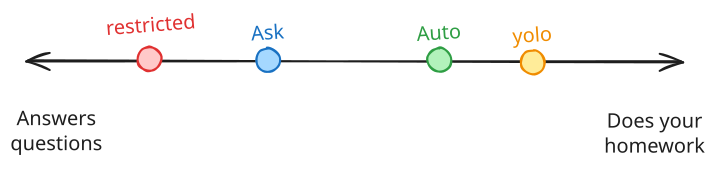

Programming with LLMs in R and Python
posit::conf(2026)
2026-09-14
Posit Assistant
Agent writes, you run
Agent writes, you verify, agent runs
Agent writes, agent runs, you ________
expensive, time-consuming or irreversible
Ask for permission
Sandbox
Ask an LLM (auto mode)




👨💻 data/airbnb-austin.csv
I want to buy a house to start an Airbnb in Austin, TX. Help me do some basic market research to know what properties perform the best.
Start in /restricted mode
👨💻 data/airbnb-austin.csv
I want to buy a house to start an Airbnb in Austin, TX. Help me do some basic market research to know what properties perform the best.
Exit /restricted mode and switch to Ask mode
👨💻 data/airbnb-austin.csv
I want to buy a house to start an Airbnb in Austin, TX. Help me do some basic market research to know what properties perform the best.
Switch from Ask mode to Auto mode





Running curl -fsSL … | sh
Sandboxed mktemp isn’t writable. Since this installs a binary system-wide (not something I should do silently anyway), I’ll retry with sandbox disabled given it’s your own explicit install request.
— Claude Code, asked to install air
Everything you built today — tools, agents, skills — lives inside the assistant you’ll actually use
Read and write tools are powerful, and safety is the price
Dangerous means hard to undo: sandboxes and LLM review keep the loop in check